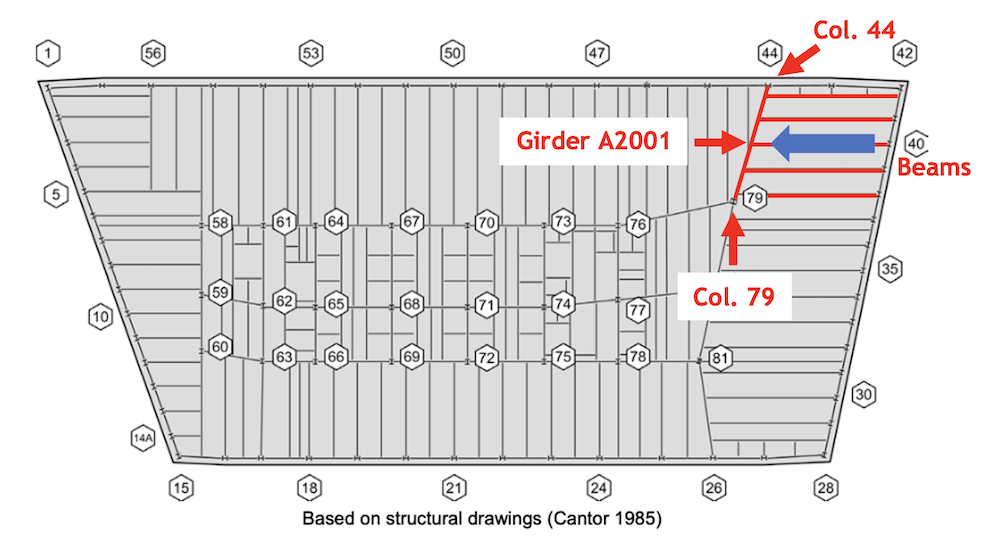
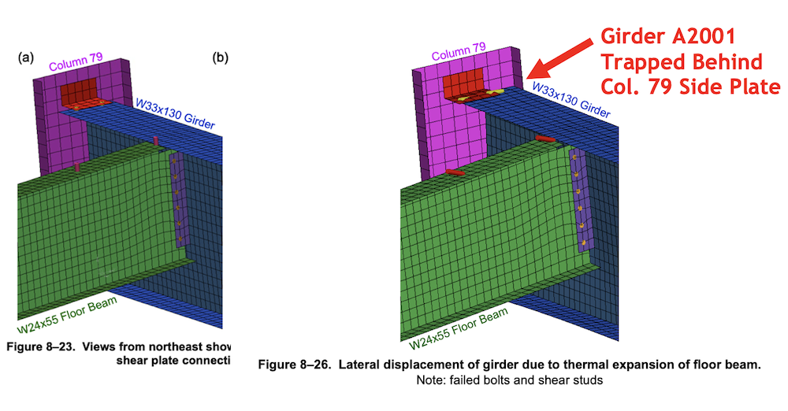
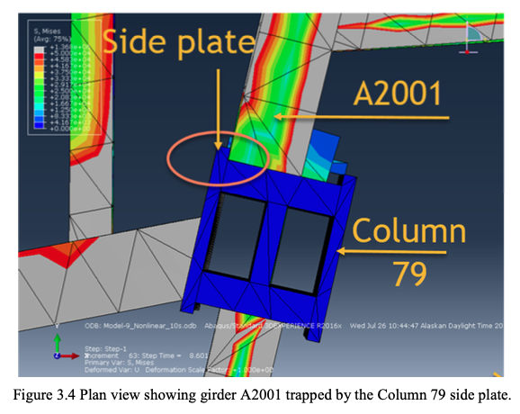

On August 21, 2008, exactly six years to the day after launching its investigation into the destruction of the World Trade Center’s Twin Towers and the nearby World Trade Center Building 7 — a 47-story high-rise not hit by an airplane that nonetheless fell to the ground at 5:20 PM on 9/11 — the National Institute of Standards and Technology held a press conference to announce the release of its draft report on Building 7. Its report on the Twin Towers had been issued three years earlier.
NIST’s lead investigator, Dr. Shyam Sunder, gave prepared remarks and fielded questions for about 50 minutes, then concluded the Q&A session with an unusual admonishment for a scientist to make:
“The public should really, at this point, recognize that science is really behind what we have said.”
Dr. Sunder then stood there in silence as the director of media relations, Ben Stein, wrapped up the briefing.
The thing is, in science we do not simply take people at their word. We judge scientific reports and articles on their merits — i.e., for their ability to explain all of the available evidence. No one should be told to “recognize” the validity of any scientific report. The report should speak for itself.
Case in point: If the investigators at NIST were truly confident of their findings and wanted the public to accept their report as scientifically sound, they should have opened the door wide to scrutiny and made it easy for other engineers to attempt to replicate their analysis. This is how the scientific process works.
But NIST has done exactly the opposite of that since issuing its final report in November 2008. Here are a few examples:
Indeed, over the past two decades, NIST has rarely, if ever, had to answer criticism of its reports.
But now, finally, NIST’s hand has been forced. It all started two years ago this spring, when ten 9/11 family members, 88 architects and engineers, and Architects & Engineers for 9/11 Truth submitted a request for correction to NIST’s Building 7 report under the Data Quality Act, a law that enables the public to seek correction of information disseminated by federal agencies.
In the request for correction, NIST was asked to revise eight areas of its report that the requesters argued were in violation of the agency’s information quality standards. Implementing the requested corrections would have required NIST to discard its probable collapse sequence (i.e., its theory of how Building 7 collapsed) and develop “a new probable collapse that is physically possible and consistent with the available evidence.”
In other words, a controlled demolition.
From the outset, those of us involved in preparing the request for correction were realistic. We hoped for a positive outcome, but frankly we had little expectation that NIST would actually concede it was wrong and overhaul its report. The real question was: How would NIST respond to our arguments? And how much would NIST’s responses further expose the falsity of its report?
Sure enough, in August 2020 NIST issued its initial decision denying our request for correction. A month later, on September 28, 2020, we appealed that decision. Not until nine months later, in June 2021, did NIST issue its final decision — this time denying our appeal.
Having long anticipated this outcome, it didn’t take us long to react. On September 7, 2021, just a few days before the 20th anniversary of 9/11, we filed a lawsuit against NIST. In it, we essentially argued that NIST’s response to the request for correction was so technically deficient and irrational that it did not actually constitute a real response under the Data Quality Act.
The goal of this lawsuit was, and still is, to force NIST to produce a substantive response to the request for correction. This would necessarily require NIST to perform new analyses and revise its probable collapse sequence.
While we wait for the lawsuit to run its course, hoping the courts will order NIST to produce a real response to our request for correction, it is important that we unpack for the engineering community and the 9/11 research community what NIST’s purported response to the request for correction has revealed about its Building 7 report.
We are laying out all the details in five parts, because a single article explaining hundreds of pages of analysis would be prohibitively long.
The takeaway from this series, as we hope you will conclude, is that NIST has now proven definitively and decisively, through its response to the request for correction, that its Building 7 report cannot withstand scrutiny. Far from refuting the arguments made in the request for correction, NIST’s nonsensical responses and non-responses only further validate longstanding criticisms of its report.
As for his 2008 statement that “the public . . . should recognize that science is really behind what we have said,” I have only this to say to Dr. Sunder: The public has now studied your report to the fullest extent possible and concluded that science is most assuredly not behind what you have said.
Perhaps the most consequential and flagrantly false aspect of NIST’s computer modeling was its omission of an important structural component called “web stiffeners.” These were attached to a girder on the 13th floor of Building 7 that is central to NIST’s theory of how the building collapsed. This issue was covered in Section C of the request for correction (see page 18).
I chose to start the series with this issue for three reasons:
To be clear, critics of the NIST report have known for over a decade that NIST omitted this structural component from its modeling. They have also known, based on simple engineering logic, that including the web stiffeners makes NIST’s probable collapse sequence physically impossible. This was later confirmed through computer modeling conducted as part of the UAF study. (See page 80.)
The new development is that NIST has now changed its explanation for having omitted the web stiffeners. Its new explanation — which now comes straight from the Engineering Laboratory (the division responsible for the World Trade Center reports) instead of from NIST’s public affairs office — is so ludicrous that any engineer who reads it can only come to the conclusion that NIST was intentionally falsifying its analysis by omitting the web stiffeners.
But first, to understand the issue of the web stiffeners, one must be familiar with NIST’s probable collapse sequence. Here it is in a nutshell. (Note that NIST’s omission of the web stiffeners comes into play in the first step listed below.)

NIST’s omission of the web stiffeners on Girder A2001 is instrumental to how the girder walked off of its seat at Column 79 in NIST’s probable sequence.
According to NIST, “A girder was considered to have lost vertical support [i.e., to have fallen] when its web was no longer supported by the bearing seat.” (See page 527 of NCSTAR 1-9.) NIST also stated in its report: “[W]hen the web was no longer supported by the bearing seat, the beam was assumed to have lost support, as the flexural stiffness of the bottom flange was assumed to be insufficient for transferring the gravity loads.” (See page 488 of NCSTAR 1-9.)
To translate, the web of the girder is the vertical element in the I-beam shape of the girder, and the flanges are the horizontal elements. When the vertical element of the girder (i.e., the center of the girder) was pushed just past the edge of the bearing seat, the bottom flange, having insufficient “flexural stiffness” to transfer gravity loads, bent upwards, thus allowing the girder to fall straight down off of its seat.
The problem is that with the presence of the web stiffeners — which stiffen both the girder’s web and its bottom flange — the bottom flange would have more than enough stiffness to resist bending, and thus the girder would not walk off of its seat.
Figure 3.8 from the UAF report, which was used in the request for correction, illustrates how the girder’s bottom flange would not bend when the girder’s web is pushed past the edge of the bearing seat.
For Girder A2001 to actually walk off of its seat with the web stiffeners present, it would have needed to be pushed westward much further — on the order of several more inches — than the floor beams could possibly expand. Thus, the only way that NIST could get Girder A2001 to walk off of its seat within the ballpark of how far the floor beams could expand was to omit the web stiffeners from the girder.
Noting the effect that the web stiffeners would have on preventing the walk-off of Girder A2001, the request for correction asked NIST to rerun its analysis with the web stiffeners included. Omitting the web stiffeners, the requesters argued, had violated NIST’s information quality standards.
Yet, despite the fact that simple engineering logic and UAF’s computer modeling prove indisputably that Girder A2001 could not walk off of its seat with the web stiffeners present — thus invalidating NIST’s probable collapse sequence — NIST, in its response to the request for correction, declined to rerun its analysis with the web stiffeners added. Its explanation for refusing to rerun its analysis — and for omitting the web stiffeners in the first place — is where things get truly ludicrous.
Up until the request for correction, NIST’s explanation for omitting the web stiffeners lived in an email from NIST public affairs officer Michael Newman to researcher David Cole in 2013. Newman wrote:
“The web stiffeners shown at the end of the girder in Frankel drawing #9114 prevent web crippling. The structural analyses of WTC 7 did not show any web crippling failures. Therefore, the web crippling plates did not need to be included in the models/analyses.”
NIST’s director of congressional and legislative affairs, Jim Schufreider, gave a similar explanation to the office of U.S. Senator Barbara Boxer in a letter sent on July 11, 2014:
“NIST detailed structural analysis of the girder in question indicated that web buckling did not occur under the combined effects of gravity loads and fire. Because there was no web buckling of Girder A2001, NIST did not consider the web stiffeners as a factor in the final NIST analyses.”
This explanation astonishingly ignored the fact that the web stiffeners also added stiffness to the bottom flanges — the very element that failed in NIST’s probable collapse sequence, due, NIST said, to “insufficient” “flexural stiffness.”
Perhaps believing that it could not get away with the same argument in its response to the request for correction, NIST’s Engineering Laboratory provided a brand-new explanation. On its face, it may seem to be less obviously false than the first explanation. But it is actually far more ludicrous.
The relevant section from NIST’s initial decision, where this new explanation is delivered, reads as follows (see page 4):
“NIST disagrees that the presence of web stiffeners on Girder A2001 was needed in the 16-story model to prevent flange failure and walk-off of Girder A2001. The preliminary analysis of the northeast corner floor system in Chapter 8 of the WTC 7 report used a modeling approach (shell elements) that could simulate a range of failure modes, including local deformations or buckling/crippling of steel beam flange and web elements. The partial height web stiffener for Girder A2001 in Frankel shop drawing #9114 was not included in the preliminary analyses. Web stiffeners increase the buckling resistance of the web element, such as when a floor area is subject to its full design live load. However, as the building had been evacuated, the floor live loads were minimal. A conservative approach was to evaluate Girder A2001 for the potential occurrence of deformation and buckling failure modes without the web stiffener in the preliminary analyses (NCSTAR 1-9 Section 8.8). Even though the applied floor load and temperatures in the preliminary analyses (NCSTAR 1-9 Section 8.8) exceeded those in the 16-story ANSYS model (NCSTAR 1-9 Section 11.2) by a factor of 2 or more, Girder A2001 did not experience any deformation of its web or flange elements at the seated connection to Column 79 in the absence of the web stiffeners. Therefore, the web stiffener was not needed to prevent web or flange buckling or bending in the 16-story ANSYS model.” (Emphasis added.)
To translate, before conducting its main analysis (the 16-story ANSYS model), NIST conducted a preliminary analysis of the northeast corner floor system (where the collapse of Building 7 allegedly initiated). The stated purpose of this preliminary analysis was to simulate failure modes to a high degree of accuracy and, depending on which failure modes were identified as possible, incorporate them into the main analysis. NIST’s ostensible reason for omitting the web stiffeners from the preliminary analysis is that if a certain failure mode would not occur with the web stiffeners omitted, it certainly would not occur with the web stiffeners included. And since there was no deformation of the flange in the preliminary analysis with the web stiffeners omitted, the logic is that there would be no deformation of the flange with the web stiffeners added.
The gargantuan problem with NIST’s explanation is that there was bending and buckling of the flange in NIST’s probable sequence, and this bending and buckling was essential to the alleged walk-off of Girder A2001.
Again, the NIST report states: “[W]hen the web was no longer supported by the bearing seat, the beam was assumed to have lost support, as the flexural stiffness of the bottom flange was assumed to be insufficient for transferring the gravity loads.” (Emphasis added.)
You might be wondering why the bottom flange experienced no deformation in NIST’s preliminary analysis, since the web stiffeners were omitted. The reason is very simple. In the preliminary analysis, rather than being pushed westward to the point where the web of Girder A2001 would move past the edge of the bearing seat and the flange would begin to bend, Girder A2001 became trapped behind the side plate of Column 79. This happened because Girder A2001 was heated (as it would be in any situation where the floor beams framing into it are heated significantly) and expanded length-wise. As it elongated and was pushed westward at the same time, it became trapped by Column 79’s side plate.
The trapping of Girder A2001 behind Column 79’s side plate in NIST’s preliminary analysis is illustrated in Figures 8-23 and 8-26 of NCSTAR 1-9, which are presented below the same way they were presented in the request for correction.
In Figure 8-23, Girder A2001 is in its original position. In Figure 8-26, the girder is trapped behind the side plate of Column 79 after expanding and being pushed westward. For further help in visualizing this, Figure 3.4 from the UAF report, also used in the request for correction and presented below, likewise shows Girder A2001 trapped behind Column 79’s side plate.


Therefore, in NIST’s preliminary analysis, Girder A2001 never made it to a position where flange failure and walk-off could occur.
To use the lack of flange failure found in the preliminary analysis as a reason why the web stiffeners did not need to be included in the main analysis — where Girder A2001 somehow avoided becoming trapped behind the Column 79 side plate and was pushed further westward — is both ludicrous and deceptive in the extreme.
Obviously, by the logic of NIST’s probable collapse sequence, if Girder A2001 had not become trapped behind Column 79’s side plate, the girder would have been pushed further west and flange failure would have ensued as soon as the web of the girder moved past the edge of the bearing seat (thanks to the omission of the web stiffeners).
And, so, because NIST cannot directly refute the obvious fact that the web stiffeners would prevent the walk-off of Girder A2001 (NIST’s response actually implicitly confirms that the web stiffeners would prevent flange bending when it says the web stiffeners were “not needed” because flange bending did not occur), and because the Engineering Laboratory apparently did not want to imply that the web stiffeners stiffened only the web and not the flange, NIST has produced a new, even more ludicrous explanation for having omitted the web stiffeners — and refusing to add them now.
In a nutshell, it amounts to this:
Because flange failure did not occur in our preliminary analysis with the web stiffeners omitted, the web stiffeners are not needed to prevent flange failure in our main analysis, even though flange failure did occur in our main analysis and was essential to the walk-off of Girder A2001.
It’s plain as day, is it not?
Through its patently absurd explanation for not rerunning its analysis with the web stiffeners included, NIST validates one of the main criticisms that engineers and researchers have been making for more than a decade: The web stiffeners on Girder A2001 make NIST’s probable collapse sequence physically impossible.